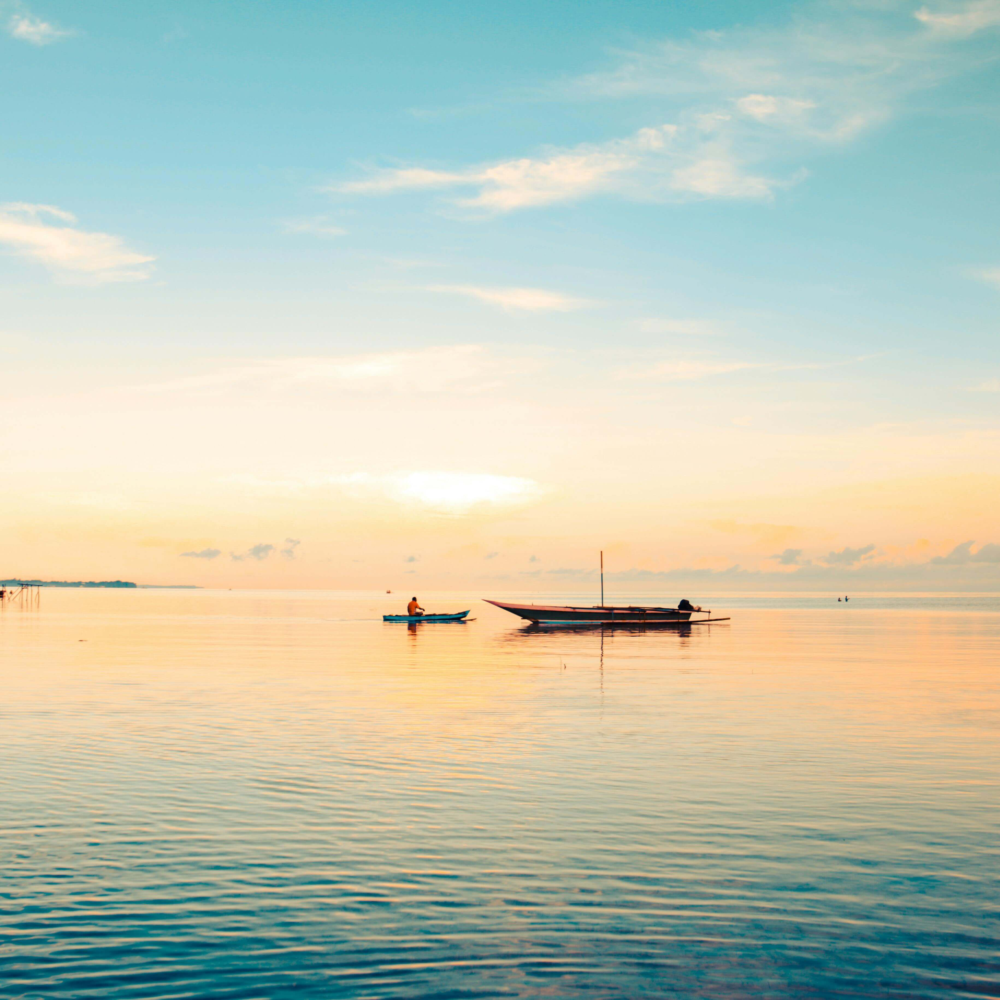

Indonesia adalah negara yang dianugerahi
keindahan luar biasa. Yang menjadikannya unik adalah keragaman
budaya serta keindahan alamnya yang menakjubkan, yang patut
dirayakan dan dilestarikan oleh semua orang. Oleh karena itu,
Kementerian Pariwisata dan Ekonomi Kreatif Republik Indonesia
menghadirkan Explore Indonesia, sebuah komitmen untuk menjadikan
Indonesia sebagai tempat di mana setiap orang dapat menikmati
kekayaan alam dan budayanya. Explore Indonesia merupakan wujud
dedikasi kami untuk mempromosikan berbagai destinasi di seluruh
nusantara, baik untuk wisatawan domestik maupun mancanegara.
Berdasarkan apa yang ingin dijelajahi dan dialami oleh wisatawan,
keajaiban Indonesia dikategorikan ke dalam lima aspek utama: Alam,
Kuliner & Kebugaran, Seni & Warisan Budaya, Rekreasi & Hiburan,
serta Petualangan. Untuk mendukung kampanye Explore Indonesia,
berbagai platform digunakan, baik online (seperti media sosial,
portal berita, dan situs web resmi) maupun offline (seperti kerja
sama dengan merek dan institusi, promosi perjalanan, dan lain
sebagainya). Explore Indonesia mengundang semua merek, institusi,
dan pemangku kepentingan di sektor pariwisata untuk menjalin kerja
sama dan membantu menyebarkan informasi tentang kekayaan alam dan
budaya Indonesia yang melimpah.